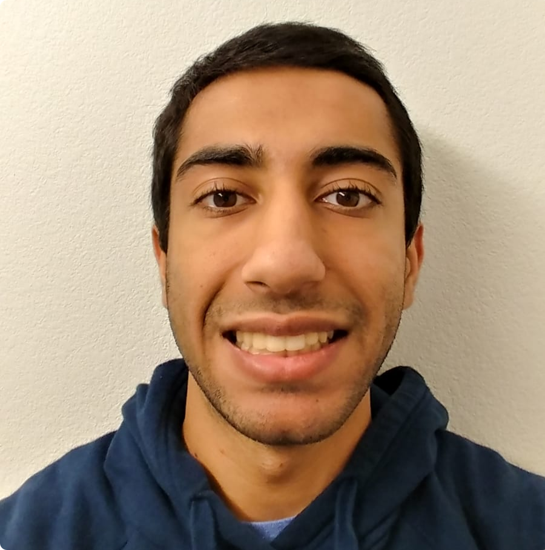
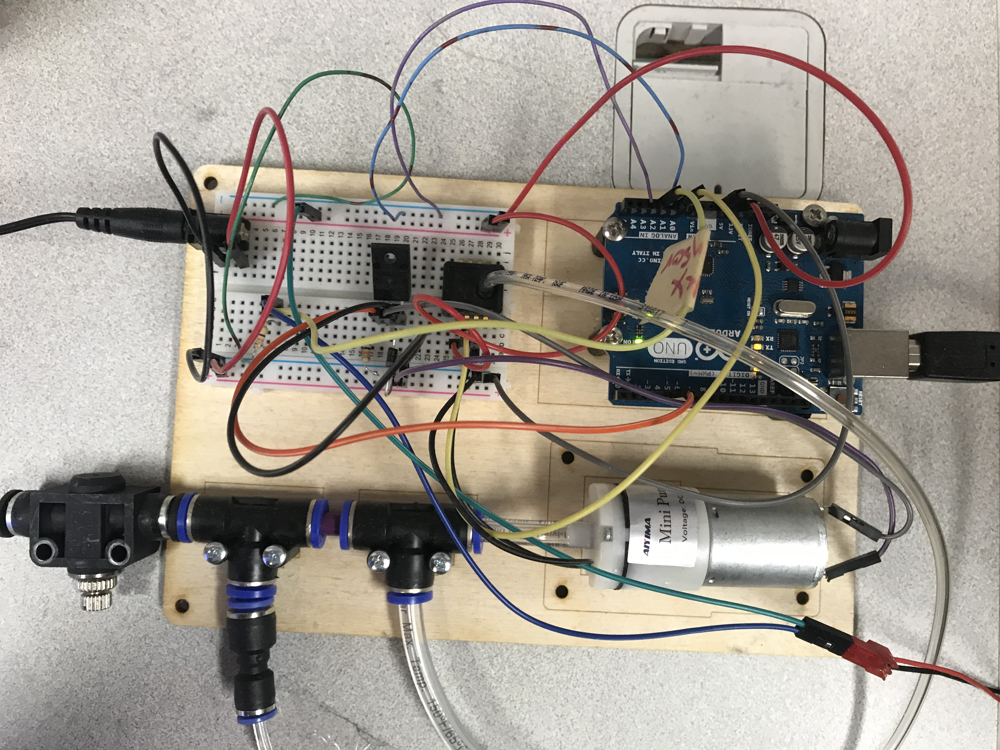
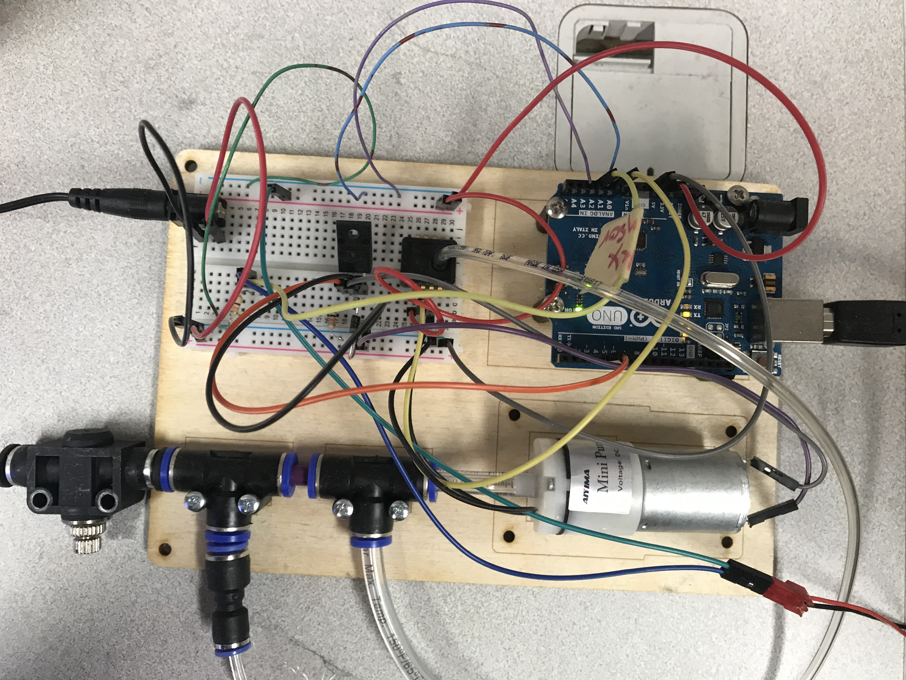

Gyanendra Tripathi

Jay Monga

Asa Smith
Sher Shah
Valmik Prabhu
Gyanendra Tripathi
Gyanendra is a masters student coming to UC Berkeley after experiencing public policy for over two decades. Hsi background in electrical engineering made him exceptionally well-suited to design the model based controller, nonlinear regression and system modelling.
Jay Monga
Jay is a computer science major with an intermediate background in signals and controls, as well as experience in Python and Matlab. Jay’s main contribution was the implementation and correction of the vision algorithm, and he heavily contributed to the data analysis and implementation of the dynamics model in the controller (generation and interpolation of via points for planning).
Asa Smith
Asa is a bioengineering student that has experience in R.O.S, python, and PID control which all greatly helped in the development of a controller for the soft gripper. Asa developed a PID controller with a sinusoidal trajectory that moves to the finger to a desired angle in an inputted amount of time and created most of the presentation for showcasing the research progress.
Sher Shah
Sher studies computer science and enjoyes developing and designing for the web. He worked primarily on developing algorithms to remove transient data from the data collection algorithms in Python. Additionally, he developed this website written in HTML, CSS, and JavaScript.
Valmik Prabhu
Valmik is the primary researcher on soft grippers and while this project was implemented by the rest of the team, it could not have been done without the guidance and expert insight that Valmik provided.
Professor Sastry
And of course, none of this could be done without Professor Sastry. The knowledge that Sastry brings makes this class like no other. His breadth of knowledge is awe-inspiring and his ability to succinctly explain each topic is appreciated. His stories about companies such as iRobot and Fanuc are fun and interesting. But what sets Sastry apart from other professors is his incredible enthusiasm for the subject. Few professors have left me wanting to learn more after a lecture, and Sastry is definitely one of those professors. I am honored to be taught be such a wonderful teacher and I hope many others get the privilege to take a course with Professor Sastry. Thank you.
 
